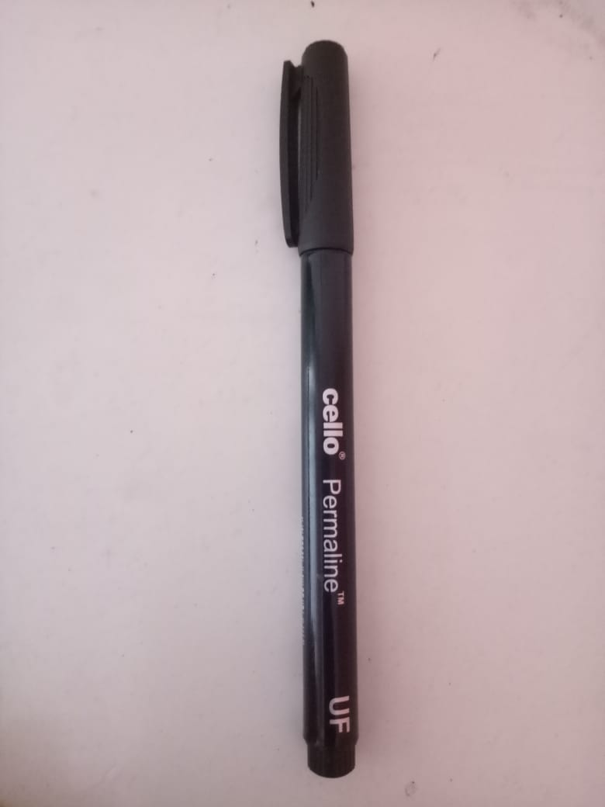

CASE STUDY BETWEEN GOOGLE LENS AND MOBILENET
GOOGLE LENS
VS
MOBILENET
- Test Image -
- Test Image -
- Test Image -
- Test Image -
- Test Image -
- Test Image - 
- Test Image -
Output on GOOGLE LENS - Rocking chair
Output on MOBILENET MODEL - Rocking chair
Result -
Draw
Output on GOOGLE LENS - Siberian cat
Output on MOBILENET MODEL - Bee
Result -
GOOGLE LENS Is More Accurate
Output on GOOGLE LENS - Lantern
Output on MOBILENET MODEL - Water bottle, soda bottle, pop bottle
Result -
GOOGLE LENS Is More Accurate
Output on GOOGLE LENS - A5 ruled spiral notebook
Output on MOBILENET MODEL - Accordion, Piano accordian, Squeeze box
Result -
GOOGLE LENS Is More Accurate
Output on GOOGLE LENS - Koi fish oil painting
Output on MOBILENET MODEL - Television
Result -
GOOGLE LENS Is More Accurate
Output on GOOGLE LENS - Cello permaline permanent Marker
Output on MOBILENET MODEL - Spotlight
Result -
GOOGLE LENS Is More Accurate
Output on GOOGLE LENS - Wishbone flower
Output on MOBILENET MODEL - Broccoli, jigsaw puzzles
Result -
GOOGLE LENS Is More Accurate
Developed by - Avani